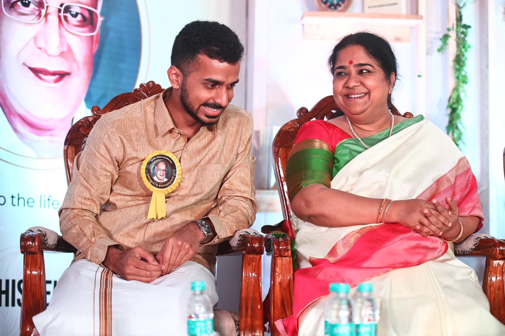

Two years ago, on the occasion of my late grandfather's 90th birth anniversary, I had the privilege of releasing his biography before esteemed guests including Smt. Lalgudi Vijayalakshmi, affectionately known as Viji madam.
When we visited Viji madam to share the invitation, we connected over her own experience chronicling the life of her father and guru, Sri Lalgudi G. Jayaraman. Days' worth of tape-recorded interviews were collected to inform Lakshmi Devnath's 2014 biography The Incurable Romantic.
During her speech at our Seema 90 event, Viji madam appreciated my inclusion of “rare words” such as rezhi (ரேழி) and pankha (पंखा), facets of century-old agraharam architecture.
I was amazed — she read the entire book cover to cover in just the few days leading up to the event.

This, to me, is one of the many reasons for my deep respect for the Lalgudi family.
I often listen to the GJR/Viji duo's lecture demonstrations from The Music Academy. These recordings demonstrate the extent of cataloging and archival work this family has undertaken.
It is no surprise, then, that when I organized and presented Kanti thatha's life, I found myself inspired not only by Sri Lalgudi G. Jayaraman's biography, but by the family's meticulous attention to memory, lineage, and documentation.